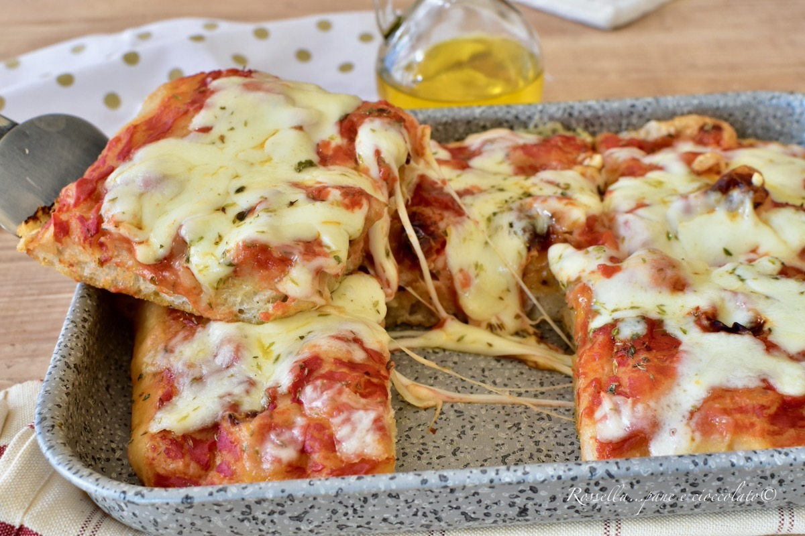

Pizza italiana en casa
La pizza será es de 4 a 5 rebanadas. Para esto necesitaremos las porciones siguientes de los ingredientes.
Para la pasta de la pizza:
- 300gr de harina
- 300gr de harina de Manitoba
- 400gr de agua
- 3gr de levadura de cerveza fresca
- 1 cucharada de aceite de oliva extravirgen
- 11gr de sal
- 1/2 cucharada de azúcar
Para el condimento clásico estilo Margarita:
- 400gr de tomate
- 300gr de queso mozzarella perfectamente rayado
- Aceite de oliva extravirgen
- Sal
- Albahaca fresca

Procedimiento
- Primero, haz la masa de pizza suave y digerible con harina, agua, muy poca levadura, aceite y sal.NOTA:si quieres hacer 1 sola pizza, siempre con la misma masa.
- Hacer pliegues con la masa. Una vez que hayas hecho los pliegues tendrás que cortar la masa, o dividirla en panes de 250 g cada uno.De cada bloque de 250 g sale 1 pizza de 25 cm de diámetro.
- Retire siempre cada trozo de masa con las manos enharinadas y la superficie ligeramente enharinada.
- Pilar la masa para que quede lisa y redonda, espolvorear con harina y cubrir con un film y dejar repoisar a temperatura ambiente durante 40 minutos.
- La espesura es un paso fundamental para obtener una pizza casera a la perfección. La superficie de trabajo debe estar siempre ligeramente enharinada, al igual que las manos. La masa no debe pegarse.
- Comience desde el centro de la masa y golpee con las yemas de los dedos para agrandar en un círculo hasta un tamaño de unos 20 - 22 cm. Tenga cuidado de dejar un borde un poco más hinchado por aproximadamente 1 cm, esa es la famosa "cornisa" como quiere la pizza napolitana. Que al cocinar se hincha ligeramente y se vuelve blanda. Si, por el contrario, quieres hacer la pizza romana baja, solo aplasta los bordes también.
- Estirar todos los panes disponibles de esta manera. Mientras tanto, prepare el aliño, yo elegí SABOR A MARGARITA mezcle los tomates pelados con una batidora, agregue sal, agregue unas hojas de albahaca y un chorrito de aceite. girar bien. Cortamos la mozzarella, la estrujamos en un paño (mejor si la escurrimos con cuidado la noche anterior) reservamos.
- Condimentar la pizza con: 400 gramos de tomates triturados pelados mezclados con un chorrito de aceite, sal y orégano seco. Para añadir a la base roja: ajo fresco cortado en láminas, orégano seco, aceite y opcional unos filetes de anchoa.
- una vez estirada la pizza y elegida la salsa, viene lo mejor, que es la parte final para obtener un resultado perfecto. La cocción doble le da a la pizza una ventaja y la acerca mucho a la pizza al horno de leña.
- Calienta una plancha, la que normalmente se hacen las crepas está bien, mejor sin asa, pero la que tiene también está bien, siempre y cuando la base sea lisa. Si no la tienes, no te preocupes, puedes utilizar sin problemas una sartén antiadherente de 24 cm de diámetro. NOTA: Es muy importante que esté caliente ya fuego alto.
- Disponer la pizza estirada directamente sobre el plato, disponiéndola y untándola. Ahora proceda rápidamente: tome la salsa hecha y espolvoréela en el centro con una cuchara, dejando libre el borde (es decir, la cornisa), agregue un poco de albahaca, un chorrito de aceite. Revisa el fondo levantando ligeramente la pizza y verás que se ha dorado ligeramente. En 1 minuto y medio la pizza ya se ha hinchado.
- Introduce la pizza con todo el plato (incluso el asa, no pasa nada durante unos minutos, a menos que sea de goma blanda) a 250° en la parte más alta que tengas. Dejar ahí 1 minuto, abrir, agregar la mozzarella y un chorrito de aceite.
- Cocina por 1 minuto más (aún menos) con la parrilla encendida hasta que la mozzarella se derrita y la cornisa esté chamuscada.
¡Tu pizza casera está lista para ser servida! caliente en el plato con albahaca fresca
¿Quieres saber más?NatGeo: Historia de la pizza Marghuerita .
Referencias
Para saber más sobre pizza italinas puedes visitar Gino e Toto Sorbillo.
Si quieres ver la receta original visita Tavolarte Gusto.